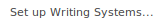
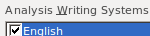
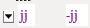
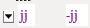

import a_setup
from test_helper import TestHelper
from Regionplus import Regionplus
helper = TestHelper("break_auto_testing")
# Set Vernacular keyboard to French
helper.Click(Pattern().similar(0.80), "'Format' not found")
helper.Click(, "'Set up Writing Systems' not found in Format menu")
analysis = helper.Find(, "'Analysis Writing Systems' not found")
Regionplus(helper, analysis.above().right()).Click(,
"'Modify...' button not found above and to the right of 'Analysis Writing Systems'")
helper.Click(Pattern().similar(0.80), "'Keyboard' tab not found")
helper.Click(, "French keyboard not found")
for i in range(2):
helper.Click(Pattern().similar(0.90), "OK button not found", restart=True)
# Create new entry
helper.Click( , "'Create new lexical entry' button not found")
paste("asdfgh")
helper.Click(Pattern().similar(0.90).targetOffset(-10,21), "'Gloss' field not found")
paste("hahaha")
helper.Click(Pattern().similar(0.90), "'Create' button not found")
wait(1)
# Verify input languagea
helper.Click(Pattern(
, "'Create new lexical entry' button not found")
paste("asdfgh")
helper.Click(Pattern().similar(0.90).targetOffset(-10,21), "'Gloss' field not found")
paste("hahaha")
helper.Click(Pattern().similar(0.90), "'Create' button not found")
wait(1)
# Verify input languagea
helper.Click(Pattern( ).targetOffset(114,4), "'Lexeme Form' field not found")
Regionplus(helper, find().right()).Exists(,
"Lexeme Form field input keyboard not in French")
helper.Click(Pattern(
).targetOffset(114,4), "'Lexeme Form' field not found")
Regionplus(helper, find().right()).Exists(,
"Lexeme Form field input keyboard not in French")
helper.Click(Pattern( ).targetOffset(94,1), "'Note' field not found")
Regionplus(helper, find().right()).Exists(,
"Note field input keyboard not in English")
# Enter text
helper.Click(, "'Texts & Words' not found")
helper.Click(Pattern(
).targetOffset(94,1), "'Note' field not found")
Regionplus(helper, find().right()).Exists(,
"Note field input keyboard not in English")
# Enter text
helper.Click(, "'Texts & Words' not found")
helper.Click(Pattern( ).targetOffset(-39,34), "'Baseline' tab not found")
paste("asdfgh jjjj")
# View Gloss tab, make sure gloss is suggested and focus shifts
helper.Click(Pattern().similar(0.81), "'Gloss' tab not found")
hover(
).targetOffset(-39,34), "'Baseline' tab not found")
paste("asdfgh jjjj")
# View Gloss tab, make sure gloss is suggested and focus shifts
helper.Click(Pattern().similar(0.81), "'Gloss' tab not found")
hover( ) # Move to blank space so the hovertext doesn't appear
wait(2)
helper.Exists(
) # Move to blank space so the hovertext doesn't appear
wait(2)
helper.Exists( , "'hahaha' gloss not suggested for 'asdfgh'")
helper.Click(Pattern().targetOffset(-16,0), "Drop down menu not found")
helper.Click(
, "'hahaha' gloss not suggested for 'asdfgh'")
helper.Click(Pattern().targetOffset(-16,0), "Drop down menu not found")
helper.Click( , "'Noun' not found")
type(Key.ENTER)
helper.Exists(Pattern(
, "'Noun' not found")
type(Key.ENTER)
helper.Exists(Pattern( ).similar(0.86), "'jjjj' word not in focus in Gloss tab")
helper.Click(Pattern().similar(0.90), "'Analyze' tab not found")
hover() # Move to blank space so the hovertext doesn't appear
# View Analyze tab, make sure focus is kept and word splits in two
helper.Exists(Pattern().similar(0.80), "'jjjj' word not in focus in Analyze tab")
helper.Click(Pattern().targetOffset(4,2), "'jjjj' not found on Morpheme line")
paste("-")
helper.Exists(, "Word not split into two morphemes")
helper.Click(Pattern(
).similar(0.86), "'jjjj' word not in focus in Gloss tab")
helper.Click(Pattern().similar(0.90), "'Analyze' tab not found")
hover() # Move to blank space so the hovertext doesn't appear
# View Analyze tab, make sure focus is kept and word splits in two
helper.Exists(Pattern().similar(0.80), "'jjjj' word not in focus in Analyze tab")
helper.Click(Pattern().targetOffset(4,2), "'jjjj' not found on Morpheme line")
paste("-")
helper.Exists(, "Word not split into two morphemes")
helper.Click(Pattern( ).targetOffset(10,0), "Drop down menu not found")
# Verify that second morpheme is a suffix
helper.Click(, "'Create New Entry' not found in drop down menu")
wait(2)
helper.Exists(Pattern().similar(0.90), "Morpheme type not listed as '-suffix'")
# Exit and put 'jjjj' back into one word so the test works next time
helper.Click(Pattern().similar(0.91), "'Cancel' button not found", restart=True)
helper.Click(Pattern().targetOffset(-37,1), "Drop down menu not found")
helper.Click(Pattern().similar(0.95).targetOffset(-23,1), "'jjjj' option not found in drop down menu")
helper.Click(, "'Lexicon' button not found")
helper.write_success()
).targetOffset(10,0), "Drop down menu not found")
# Verify that second morpheme is a suffix
helper.Click(, "'Create New Entry' not found in drop down menu")
wait(2)
helper.Exists(Pattern().similar(0.90), "Morpheme type not listed as '-suffix'")
# Exit and put 'jjjj' back into one word so the test works next time
helper.Click(Pattern().similar(0.91), "'Cancel' button not found", restart=True)
helper.Click(Pattern().targetOffset(-37,1), "Drop down menu not found")
helper.Click(Pattern().similar(0.95).targetOffset(-23,1), "'jjjj' option not found in drop down menu")
helper.Click(, "'Lexicon' button not found")
helper.write_success()